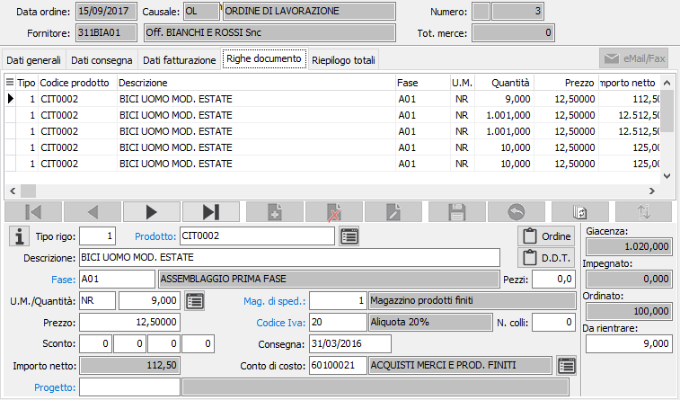
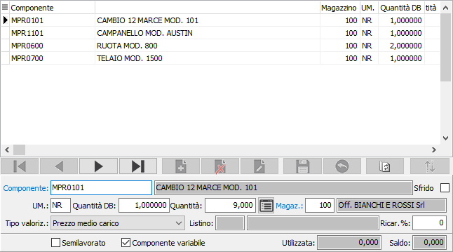
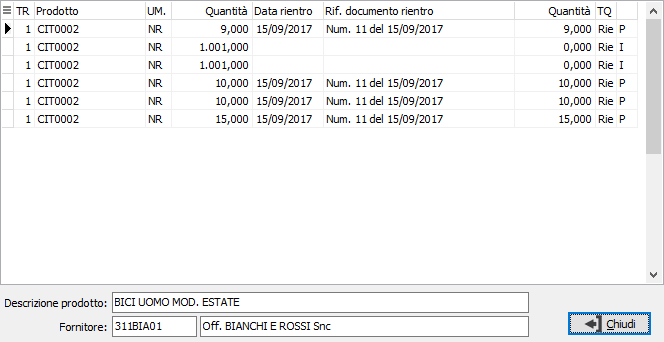
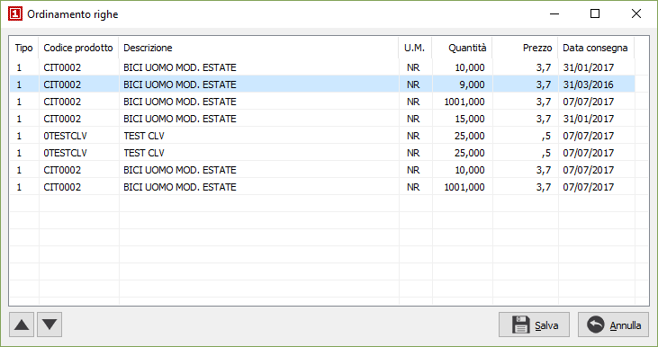

Il pulsante
consente di accedere, se attivo il modulo di contabilità analitica, alla
sezione dove indicare il centro di costo, la voce di costo e la commessa,
in base a quanto indicato in configurazione
contabilità analitica.
Il pulsante
consente di accedere, se attivo il modulo di contabilità analitica, alla
sezione dove indicare il centro di costo, la voce di costo e la commessa,
in base a quanto indicato in configurazione
contabilità analitica.Righe documento
In questa finestra video è possibile inserire le righe dell’ordine. Non tutti i campi visualizzati nell’illustrazione seguente sono necessariamente presenti nell’installazione attiva presso l’utente, dipende dalla configurazione impostata.
La maschera video è articolata su due sezioni: la sezione inferiore visualizza il pannello di input mentre la griglia della sezione superiore visualizza le righe inserite.

TIPO RIGO: codice numerico presente sulla tabella dei tipi rigo utilizzato per definire il tipo di rigo che si vuole inserire. Sul campo sono attive le funzioni di ricerca (F9).
PRODOTTO: campo alfanumerico per inserire il codice dell’articolo dell'ordine. Il campo è attivo solo per i tipi di rigo che prevedono l'accesso al prodotto. Al salvataggio viene generato il dettaglio componenti accessibile tramite il pulsante dettaglio. Nel caso in cui il componente necessario sia il prodotto alla fase precedente, non comparirà nel dettaglio componenti. Sul campo sono attive le funzioni di ricerca (F9) ed accesso rapido alla tabella (CTRL+W). Tramite il tasto funzione F11 si può accedere alla finestra relativa alla Selezione descrizioni prodotti.
DESCRIZIONE: campo alfanumerico di 60 caratteri per descrivere il prodotto. In caso di articoli codificati, il campo viene compilato automaticamente con la descrizione dell’articolo in esame, che è tuttavia modificabile a cura dell’utente.
NOTE ORDINE: bottone che abilita un campo annotazioni, relative al rigo di documento attivo, che verranno stampate sul documento.
NOTE DDT: bottone che abilita il campo annotazioni, relative al rigo di documento attivo, che verranno riportate e stampate sul documento di trasporto.
FASE: codice della fase di lavorazione del prodotto; la fase deve essere presente nel ciclo di lavorazione del prodotto. Sul campo sono attive le funzioni di ricerca (F9) ed accesso rapido alla tabella (CTRL+W).
PEZZI: campo numerico che indica la seconda quantità del documento, se attivato da configurazione.
UNITÀ DI MISURA: campo alfanumerico di 3 caratteri, presente nella tabella Unità di misura, per descrivere l’unità di misura del prodotto. Per gli articoli codificati viene presentata automaticamente la prima unità di misura presente in anagrafica. L’unità di misura può essere modificata dall’utente, ma per gli articoli codificati vengono accettati solo i codici delle unità di misura presenti in anagrafica articolo. Sul campo sono attive le funzioni di ricerca (F9) ed accesso rapido alla tabella (CTRL+W). Tramite il tasto funzione F11 si può accedere alla finestra relativa al fattore di conversione. Tramite il tasto funzione F12 si può accedere alla finestra relativa alla selezione di una unità di misura con conversione della quantità; tramite i tasti CTRL+F12 si può accedere alla finestra relativa alla conversione di una unità di misura all'unità di misura del documento.
QUANTITÀ: campo numerico per inserire la quantità ordinata per l'articolo attivo. Se attiva la gestione del dettaglio quantità è presente il bottone dettaglio, a destra del campo, tramite il quale sarà visualizzata la relativa finestra di dettaglio quantità; l'attivazione della finestra avviene comunque in automatico al momento dell'accesso al campo quantità.
PREZZO: campo numerico per inserire il prezzo. Per gli articoli codificati viene presentato, nell’ordine, il prezzo dell'eventuale listino associato al fornitore terzista oppure il prezzo dell'ultimo ordine, in ordine di tempo, dove è presente il prodotto nella fase di lavorazione richiesta. Il prezzo proposto può essere modificato dall’utente.
SCONTI O MAGGIORAZIONI: campi, abilitati o meno in relazione al numero sconti previsto in configurazione, per inserire una percentuale di sconto o maggiorazione. Se esistenti, vengono proposte le percentuali di sconto esistenti in anagrafica fornitori, in anagrafica articoli o in listini fornitori. A conferma dell’ultimo sconto, viene visualizzato l’importo netto di rigo.
MAGAZZINO DI SPEDIZIONE: codice del magazzino aziendale da cui deve essere prelevata la merce per l’evasione dell’ordine. Viene proposto il magazzino presente in configurazione. Sul campo sono attive le funzioni di ricerca (F9) ed accesso rapido alla tabella (CTRL+W).
CODICE IVA: codice I.V.A. memorizzato sull'articolo. Se l’ordine prevede l’esenzione Iva, viene proposto il codice di esenzione stesso. Sul campo sono attive le funzioni di ricerca (F9) ed accesso rapido alla tabella (CTRL+W).
NUMERO COLLI: campo numerico che indica il numero dei colli relativi al rigo del documento, se attivato dalla configurazione del tipo rigo. Il valore del campo concorre alla formazione del totale colli.
CONSEGNA: eventuale data di consegna relativa al prodotto alla fase. Se non inserita viene proposta la data del documento.
CODICE PROGETTO: Codice alfanumerico di 15 caratteri che definisce il progetto di riferimento. Sul campo sono attive le funzioni di ricerca (F9) ed accesso diretto alla tabella (CTRL+W). Il campo è presente solo se attiva la gestione progetti e configurato il progetto sul rigo.
Versione Enterprise:
TIPO COSTO: codice del tipo di costo memorizzato sull'articolo. Consente la corretta contabilizzazione del costo generato dal rigo di fattura derivante dall’ordine. Sul campo sono attive le funzioni di ricerca (F9) ed accesso rapido alla tabella (CTRL+W).
Altre versioni:
CONTO DI COSTO: codice del sottoconto memorizzato sull'articolo. Utilizzato per la contabilizzazione del costo generato dal rigo di fattura derivante dall’ordine. Sul campo sono attive le funzioni di ricerca (F9) ed accesso rapido alla tabella (CTRL+W).
Il pulsante
consente di accedere, se attivo il modulo di contabilità analitica, alla
sezione dove indicare il centro di costo, la voce di costo e la commessa,
in base a quanto indicato in configurazione
contabilità analitica.
 Il bottone Dettaglio
consente l'accesso alla finestra contenete le righe di componenti che
si riferiscono al prodotto/fase corrente.
Il bottone Dettaglio
consente l'accesso alla finestra contenete le righe di componenti che
si riferiscono al prodotto/fase corrente.

Nel dettaglio del rigo, generato in automatico se il prodotto ha una distinta base, sono presenti i seguenti campi:
COMPONENTE: codice del prodotto componente dell'articolo presente sul rigo in esame. Sul campo sono disponibili le funzioni di ricerca (F9).
DESCRIZIONE: descrizione interna del componente.
UM.: unità di misura del componente all'interno del dettaglio. Sul campo sono disponibili le funzioni di ricerca (F9).
QUANTITÀ DB: riporta la quantità, derivante dalla distinta base, necessaria per un'unità di prodotto principale.
QUANTITÀ: definisce la quantità necessaria del componente per la composizione del prodotto alla fase. Se attiva la gestione del dettaglio quantità per questo documento, è presente il bottone dettaglio, a destra del campo, tramite il quale sarà visualizzata la relativa finestra di dettaglio quantità; l'attivazione della finestra avviene comunque in automatico al momento dell'accesso al campo quantità.
MAGAZZINO: codice del magazzino aziendale da cui deve essere prelevata la merce per l’evasione dell’ordine. Viene proposto il magazzino presente in configurazione. Sul campo sono attive le funzioni di ricerca (F9) ed accesso rapido alla tabella (CTRL+W)
TIPO VALORIZZAZIONE: indica l'eventuale tipo di valorizzazione da applicare al componente corrente. Valori possibili:
Nessuna
Prezzo medio di carico
Costo ultimo carico
Costo di mercato
Prezzo di vendita
Prezzo di listino
LISTINO: eventuale codice del listino prezzi da utilizzare per ricercare il costo del componente. Sul campo sono attive le funzioni di ricerca (F9).
%RICARICO: eventuale percentuale di maggiorazione da applicare al costo del componente.
SEMILAVORATO: la spunta su questa casella indica che il componente è un semilavorato. Questa indicazione è presente solo se è stato scelto, in fase di inserimento della disposizione, di generare i movimenti per i semilavorati.
COMPONENTE VARIABILE: la spunta su questa casella indica che il componente, sulla distinta base, è stato definito di tipo variabile e che il prodotto riportato in automatico è quello generico. Questa prestazione è disponibile solo per la versione Enterprise e deve essere attivata tramite la configurazione distinta base.
Nella finestra video è possibile scorrere le righe di documento, visualizzando quello attivo nel pannello di input, tramite i tasti CTRL+freccia giù e CTRL+freccia su. Un rigo di documento visualizzato nel pannello di input può essere eliminato, ancorchè privo di trattamenti successivi, premendo il bottone Elimina della barra strumenti del pannello di input; è possibile inserire un rigo vuoto immediatamente successivo al rigo attivo premendo il bottone Nuovo della barra strumenti del pannello di input.
 Tramite il pulsante Dettaglio evasione rigo, è possibile
visualizzare lo stato di evasione del rigo. Nella finestra compaiono i
riferimenti ai documenti con cui è stato evaso parzialmente o totalmente
il rigo dell'ordine.
Tramite il pulsante Dettaglio evasione rigo, è possibile
visualizzare lo stato di evasione del rigo. Nella finestra compaiono i
riferimenti ai documenti con cui è stato evaso parzialmente o totalmente
il rigo dell'ordine.

 Tramite il pulsante Ordina è possibile modificare
l'ordinamento delle righe del documento spostandole singolarmente tramite
gli appositi tasti di scorrimento oppure selezionando e trascinando le
singole righe. La pressione sul pulsante Salva determina la modifica effettiva
dell'ordinamento.
Tramite il pulsante Ordina è possibile modificare
l'ordinamento delle righe del documento spostandole singolarmente tramite
gli appositi tasti di scorrimento oppure selezionando e trascinando le
singole righe. La pressione sul pulsante Salva determina la modifica effettiva
dell'ordinamento.
